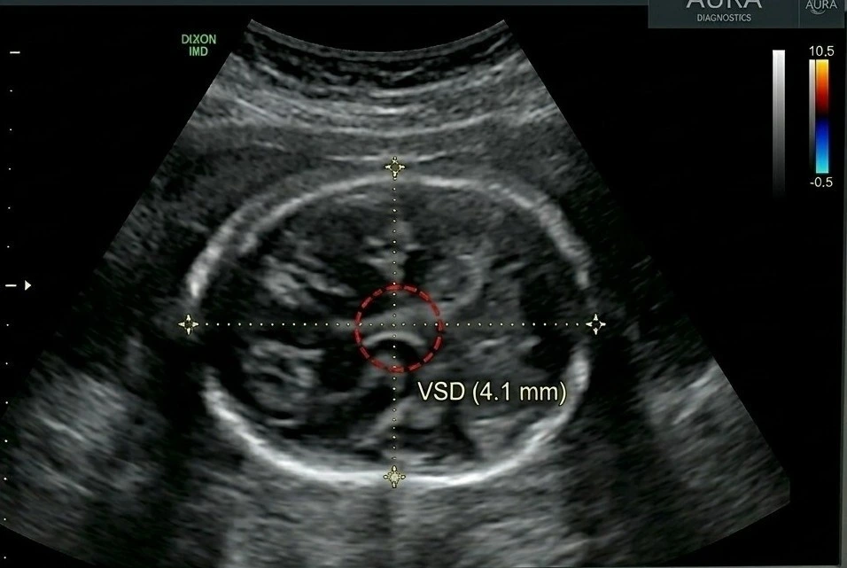

The Anomaly scan, also known as the TIFFA scan (Targeted Imaging for Fetal Anomalies), is one of the most detailed and important pregnancy scans. At Meera 4D Scans Madurai, we perform comprehensive anomaly scans to give you complete confidence in your baby's health and development.
What is an Anomaly / TIFFA Scan?
The Anomaly scan is a detailed ultrasound examination performed between 18 and 22 weeks of pregnancy. It is a thorough, systematic examination of your baby's organs, structure, and overall development — checking for any structural abnormalities that may require medical attention.
At Meera 4D Scans Madurai, our specialist sonologists use high-resolution ultrasound to conduct a comprehensive TIFFA scan — ensuring your baby's development is thoroughly assessed with precision and care.
Why is the Anomaly Scan Important?
- Checks all major fetal organs in detail
- Detects structural abnormalities early for timely medical intervention
- Assesses placenta position and amniotic fluid levels
- Measures fetal growth and confirms healthy development
- Recommended for all pregnant women at 18–22 weeks

When Should You Get an Anomaly Scan?
| Weeks | Recommended? |
|---|---|
| Before 18 weeks | Too early for full anomaly assessment |
| 18 – 22 weeks | Ideal window for TIFFA scan |
| After 22 weeks | Can be done but less optimal |
What Does the Anomaly Scan Check?
- Brain & Spine — neural tube and brain structure
- Heart — four chambers, valves and blood flow
- Kidneys & Abdomen — organ structure and function
- Limbs & Facial Features — arms, legs, lips and palate
- Placenta Position — location and grade
- Amniotic Fluid — levels around the baby
- Umbilical Cord — cord insertion and vessels
Is the Anomaly Scan Safe?
- Completely safe for mother and baby
- Uses sound waves only — no radiation
- Takes 30 to 45 minutes
- Internationally recommended for all pregnancies
Why Choose Meera 4D Scans Madurai?
- Specialist sonologists with expertise in fetal anomaly scanning
- High-resolution ultrasound for the clearest, most detailed images
- Same day detailed reports with compassionate guidance
- Trusted by 10,000+ mothers in Madurai